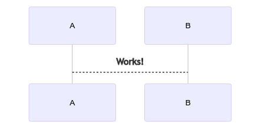

Shell Tutorial
Table of Contents
1. Shell脚本入门
1.1. Introduction to Shell
1.1.1. 目标
1.1.2. 疑问
Linux系统是如何操作计算机硬件CPU，内存，磁盘，显示器等？ 答案：使用Linux内核操作计算机硬件。
1.2. 编写格式与执行格式
1.2.1. 目标
1.2.2. Shell脚本HelloWord入门案列
#!/bin/bash echo "hello world!"
1.3. 多命令处理

#include <stdio.h> int main(void) { printf("Hello world"); }